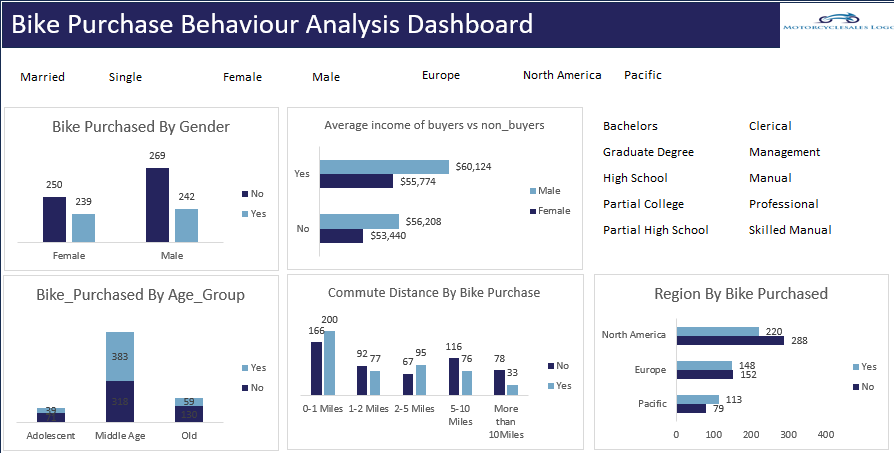

This Excel dashboard analyzes product listings on Amazon across
multiple categories. It provides business insights on product
ratings, discounts, pricing, and category performance to guide
decision-making in sales and marketing.

This project involves analyzing KMS Sql Case Study using SQL
Server. It includes complex SQL operations such as joins,
aggregations, data cleaning, and business insights to help KMS
make better decisions.

This project presents an end-to-end analysis of Udemy course performance using an online dataset sourced from a public learning-platform repository. The goal was to explore how course subjects, price types, levels, and reviews influence subscriber engagement. The insights are visualized in a clean, interactive Tableau dashboard.

This project presents a complete end-to-end data analysis of Joffrey’s Coffee Shop, using an online dataset and Microsoft Excel to build an interactive dashboard.
The goal is to uncover sales performance trends, customer behavior patterns, and product-level insights to support better business decisions.

This project explores customer demographics and behavioral patterns that influence bike purchasing decisions. The dataset was obtained online from an open-source sample data repository, and I transformed it into an interactive dashboard using Microsoft Excel.